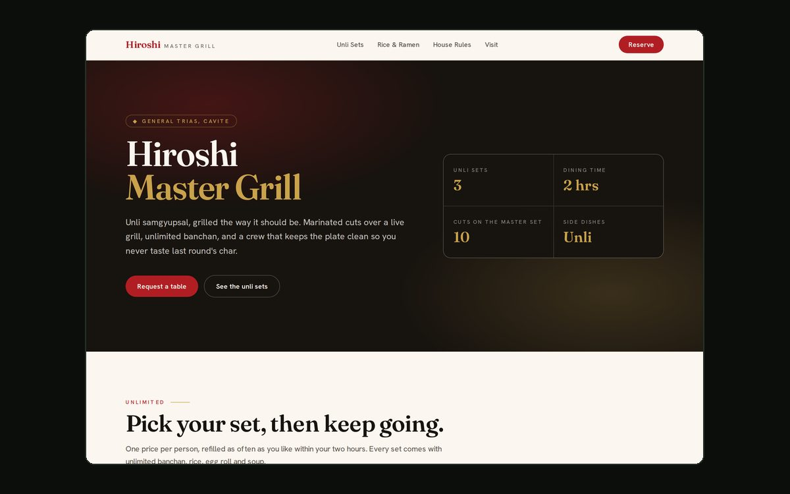
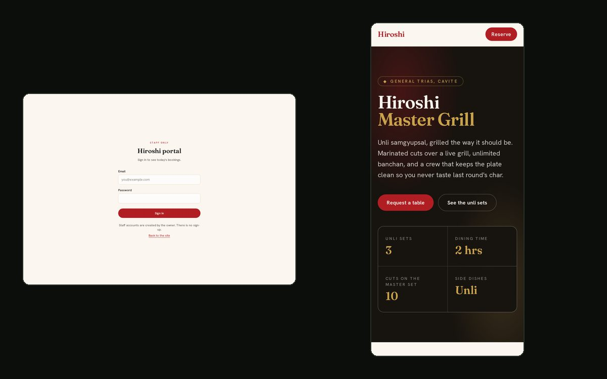

hiroshi-grill/
A reservation web app for Hiroshi Master Grill Samgyupsal, an unli samgyupsal restaurant in General Trias, Cavite. My first paying client. Two faces on one codebase: a public site anyone can browse and book from, and a staff portal behind a login.

$cat problem.md
An unli samgyupsal place takes bookings over Facebook Messenger, which means the reservation for Friday evening lives in a chat thread somewhere and the staff on shift cannot see it. The restaurant needed a page a guest could book from, and a screen the people working that night could actually open.
$cat solution.md
- Public site. Branding, the unli sets, the rice and ramen menu, house rules, location, and a reservation request form. No login, because asking a hungry stranger to make an account loses the booking.
- Staff portal. Sign-in at
/portal, then a dashboard listing each day's bookings with only the controls that role is allowed to use. - One schema, two runs. The browser validates as the guest types, for friendly errors. The API re-runs the same Zod schema on what actually arrived, and that is the run that protects the database.

$cat security.md
This is the project where the security work went in at the start rather than at the end, and where several decisions came with a cost worth stating.
-
A nonce-based Content-Security-Policy. A flat
script-src 'self'looks strict and quietly breaks the App Router, because Next boots React from inline scripts: the browser blocks them, hydration never runs, and the reservation form becomes dead HTML. This project hit exactly that. The tempting fix,unsafe-inline, throws away the thing a CSP is for. A per-response random nonce, stamped on the scripts we trust, is the real one. The cost is written down in the file: a nonce is per-response, so those pages render per request instead of coming from a build-time cache. - The endpoint stores the schema's output, not the body it was sent. Trimmed, coerced, unknown keys dropped. Passing the raw body onward after validating it is a quiet way to undo the validation you just did.
-
Rate limiting in Postgres, not in a JavaScript variable.
On Vercel each serverless instance has its own memory, so a bot that trips
an in-memory limit just lands on a fresh instance. The counter is one
atomic
INSERT … ON CONFLICT DO UPDATE, because the obvious read-then-write races under exactly the burst it exists to stop. Verified with 30 concurrent connections against a limit of 10, and exactly 10 got through. - IPs are salted and hashed, never stored. The limiter only needs to answer "same caller as before?" and a hash does that while leaving the database holding no record of who visited. Unsalted would be pointless: there are about four billion IPv4 addresses, so a plain SHA-256 is reversible in seconds.
-
Trusting the right header.
x-forwarded-foris client-supplied and can say anything, so taking its leftmost value lets an attacker use a fresh fake address per request and never hit the cap. On Vercel,x-vercel-forwarded-foris set by the platform, so that is the one to prefer. -
A honeypot that lies politely. A hidden field a real guest
never sees. When it is filled, the response is the same cheerful
201a real booking gets, and the record is dropped without touching the database. Telling a bot it was caught teaches whoever wrote it to stop filling the field. - Row Level Security is what makes the rest real. Every table denies by default, so what a role can do is exactly what a policy says. A customer holding the public key with dev tools open still cannot read one reservation, because the database refuses before any of our code runs. 43 policy tests cover it, run against a real Postgres in CI.
Asia/Manila, not in the server's UTC.
Otherwise a 9pm booking made in Manila gets rejected for being yesterday.
$cat honest-notes.md
Every business detail on the site is still a placeholder, and they live in two files so they can be corrected in one place. That matters more than it sounds: the address, phone and hours are also fed to Google as structured data, and publishing wrong ones there is worse than publishing none. The repo has a go-live document listing every placeholder field and what each one feeds, so none of them get missed.
The 132 tests run with no server and no database. The 43 policy tests need a scratch Postgres, which CI now provides as a service container, so both suites run on every push that touches this project. The policy tests are the ones worth having there: a policy loosened by a later migration would not fail any of the others.